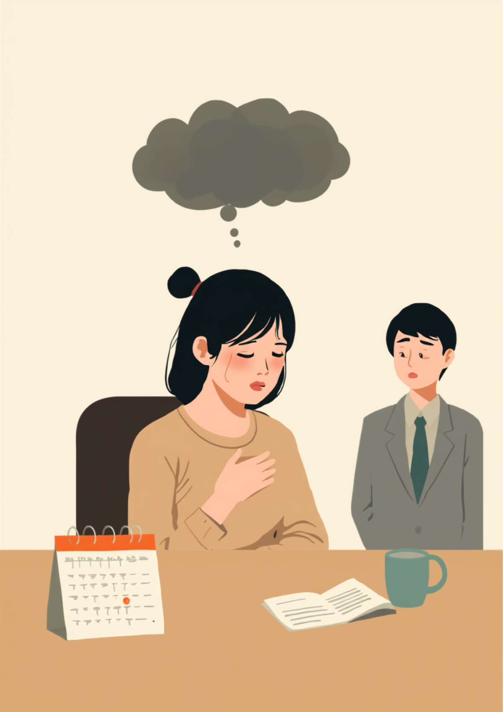

生理前になると、感情の波が自分でも制御できないほど強く出て、涙が止まらなくなったりイライラが爆発してしまったりする。それがPMDD（月経前不快気分障害）です。月に一度、数日だけ「別人のようになる」ことから、周囲には「性格が変わった」「気分屋」と誤解されやすく、本人はそのギャップに深く傷つき、自己嫌悪を抱えていることも少なくありません。この記事では、PMDDのある方が仕事の中で抱えやすいしんどさと、職場への伝え方、使える制度を当事者の声をもとに整理しました（2026年7月時点の情報です）。
PR



涙も、怒りも、自分で止められない。それでも仕事は続いている
「生理前だけ人が変わる」と言われることのつらさ
PMDDは、月経前のホルモンバランスの変化に脳が過敏に反応することで、気分の落ち込みやイライラが通常のPMSより強く出るとされています。性格や気の持ちようの問題ではありません。ミミ
就労支援の現場で関わってきた中で、女性の当事者から繰り返し聞いてきた言葉があります。「生理前だけ人が変わるって言われるんです」というものです。PMDD（月経前不快気分障害）があると、普段は穏やかな人でも、排卵後から生理が始まるまでの数日間だけ、イライラや涙もろさ、強い焦燥感が抑えられなくなることがあります。
厄介なのは、本人にとってもその変化が「自分でも制御できない」という感覚であることです。頭では「今日は当たらないようにしよう」と分かっていても、些細な一言に涙が止まらなくなったり、同僚の物言いに強い怒りがこみ上げてきたりする。落ち着いた頃には「なんであんなことで」と自己嫌悪に陥り、それを繰り返すうちに、自分を信用できなくなってしまう方も少なくないようです。
!
PMDDの症状の現れ方や程度には個人差があります。この記事で挙げる内容がそのまま当てはまるとは限らないため、つらさが続く場合は自己判断せず婦人科や心療内科に相談することをお勧めします。
「生理前の1週間だけ、自分じゃない誰かに乗っ取られてる感じがしてました。会議で同僚がちょっと強めに言ってきただけで、涙腺が崩壊して席を立ってトイレに駆け込んだこともあります。落ち着いてから『さっきはすみません』って謝るんですけど、相手はきっと『情緒不安定な人』だと思ってるだろうなって、それがずっと恥ずかしくて。半年くらい誰にも言えませんでした。」
20代・女性（PMDD・エンジニア職）
相談の一コマ
相談者
生理前になると自分でもコントロールできないくらいイライラしてしまって、上司に「情緒不安定だ」って言われたことがあります。どう説明すればいいのか分からなくて。

ミミ
PMDDは、ホルモンの変化に脳が過敏に反応して起きるとされていて、性格の問題ではないんです。周期的に波があることを知っておくだけでも、少し捉え方が変わるかもしれません。
相談者
性格じゃない、と思っていいんですね…ずっと自分がダメなだけだと思っていました。
ミミ
はい。そのうえで、体調が安定している時期に「月に一度、不安定になる時期がある」とだけ伝えておく方法もあります。次の章で具体的に見ていきましょう。
PMSとPMDDは何が違うのか、なぜ性格の問題と誤解されるのか
PMS（月経前症候群）は、生理前に起こる心身の不調全般を指す言葉としてよく知られています。PMDDはその中でも、気分の落ち込みや強いイライラ、不安感といった精神的な症状が特に重く、仕事や人間関係に支障をきたすレベルのものとされています。腹痛やむくみといった身体症状が中心のPMSとは異なり、PMDDでは「感情のコントロールが利かない」という点が中心的な症状になりやすいのが特徴です。
i
PMDDは月経のある方の一部に見られるとされていますが、症状の重さや現れ方には個人差があります。同じ「生理前がつらい」でも、PMSの範囲なのかPMDDの範囲なのかは、自己判断ではなく医療機関での相談が確実です。
周囲から「性格が変わった」と見えてしまう背景には、この不調が約1ヶ月という周期で繰り返されるという特殊さがあります。毎日同じ調子で不安定なら「体調が悪いのだろう」と理解されやすいものですが、月のうち数日だけ様子が変わり、生理が来ると嘘のように元に戻る。この落差が、周囲にとっては「気分屋」「機嫌が悪い時期がある人」という印象として記憶されやすいのだと思います。
周期の中の一部分だけ「しんどい区間」がある。その区間だけを見て人柄が判断されやすい
「正直言うと、しんどい時期にどんな自分になるか、自分が一番怖かったです。3ヶ月間、症状が出た日をカレンダーにメモしてみたら、見事に生理の10日くらい前から荒れてることに気づいて。それまでは『私、性格悪いのかな』って本気で悩んでました。婦人科でPMDDの可能性を指摘されたときは、正直ちょっと泣きました。病気に名前がついただけで、こんなに救われるんだって。」
30代・女性（PMDD・事務職）
職場にどう伝える、うまくいく場面といかない場面
PMDDのつらさをそのまま言葉にすると、「生理くらいで」「みんな我慢してる」と受け取られてしまうことがあります。一方で、伝え方を誤ると今度は必要以上に距離を置かれてしまうという声もあります。「情緒不安定な人」というレッテルと、「大事な仕事を任せられない人」という評価の間で、ちょうどいい伝え方を探すのは簡単ではありません。
体調が安定している時期に、あらかじめ伝えておく
症状が出ている最中ではなく、月経後の落ち着いている時期に伝えておく方法が助けになるとされています。「病名」を出す必要はなく、業務に関わる範囲に絞って共有するだけでも、いざというときにフォローを頼みやすくなる場合があります。
- 「月に一度、数日だけ体調が不安定になる時期があります」
- 「その時期は大事な判断や対人対応が必要な業務は避けたいです」
- 「機嫌が悪そうに見えたら、そっとしておいてもらえると助かります」
- 「体調不良として休みをいただくことがあるかもしれません」
病名まで開示するかどうかは、本人が選べることです。「体調不良の時期がある」という伝え方だけでも、周囲は心づもりができるようになります。伝えることは弱さではなく、働き続けるための工夫だと思ってみてください。ミミ
症状記録アプリやカレンダーで自分の周期を把握しておくと、「来週はしんどい時期だから、重い判断が必要な仕事は前倒しで終わらせておこう」といった自衛もしやすくなります。すべてを職場のせいにも、自分のせいにもしすぎず、うまく付き合っていく工夫を積み重ねている方が多いようです。
使える制度と、一人で抱えないための相談先
精神障害者保健福祉手帳という選択肢
PMDDの症状が重く、日常生活や仕事に長期的な支障が出ている場合、精神障害者保健福祉手帳の対象として検討されるケースがあるとされています。取得には医師の診断書が必要で、初診から一定期間が経過していることが条件になる場合もあります。詳しくは主治医や自治体の障害福祉窓口に確認するのが確実です（2026年7月時点の情報です）。手帳の取得は義務ではなく、あくまで選択肢のひとつとして考える方も多いようです。
相談できる窓口
- 婦人科（ホルモン療法や低用量ピルなど治療の相談）
- 心療内科・精神科（気分の落ち込みが強い場合の相談）
- 職場に選任されている産業医（50人以上の事業場に選任義務あり）
- 自治体の女性健康相談窓口、精神保健福祉センター
PMDDの症状の現れ方や、必要な配慮の内容には個人差があります。この記事の内容がそのまま当てはまるとは限らないため、実際の判断は主治医・支援者・自治体の窓口とよく相談しながら進めることをお勧めします（2026年7月時点の情報です）。
月に一度、しんどい時期があること自体は、あなたの性格の欠陥ではありません。周期を知り、伝え方を工夫することは、自分を守りながら働き続けるための立派な準備です。
よくある質問
Q. PMDDとPMS（月経前症候群）はどう違いますか？
PMSは生理前に起こる心身の不調全般を指しますが、PMDDはその中でも気分の落ち込みやイライラなど精神的な症状が特に強く、仕事や人間関係に支障が出るレベルのものを指すとされています。月経のある方の一部に見られるとされていますが、感じ方には個人差があります。
Q. PMDDで精神障害者保健福祉手帳は取得できますか？
症状が重く日常生活に長期的な支障がある場合、精神障害者保健福祉手帳の対象として検討されるケースがあるとされています。ただし申請には医師の診断書が必要で、症状の程度によっては対象とならない場合もあります。詳しくは主治医や自治体の窓口にご確認ください（2026年7月時点の情報です）。
Q. 職場にPMDDのことをどう伝えればいいですか？
症状のすべてを説明する必要はないとされています。「月に一度、体調が不安定になる時期がある」など、業務に関わる範囲に絞って、体調が安定している時期に伝えておく方法が助けになる場合があります。
Q. 「生理前だから」と伝えると甘えだと思われませんか？
生理前の不調はホルモンバランスの変化による生理的な反応であり、性格や意思の問題ではないとされています。とはいえ周囲の受け止め方には個人差があるため、体調不良として伝えるなど、伝え方を工夫している方もいます。
Q. PMDDはどの科に相談すればいいですか？
婦人科や心療内科、精神科で相談できるとされています。症状の記録（いつ、どんな症状が出たか）をつけておくと、診察の際に伝えやすくなる場合があります。つらさが続くときは一人で抱えず早めの相談をお勧めします。
この5点を頭に置いておくだけで、少し気持ちが軽くなるかもしれません
PR


一人で抱え込む前に、今の気持ちを話してみませんか
「まだ迷っている」段階でも大丈夫です。mimemimeの無料相談は、今の状況の整理から一緒に始められます。
無料で話してみる
おのざる
mimemime代表。就労支援の現場経験をもとに、障がいのある方の働く不安に寄り添う記事を執筆。